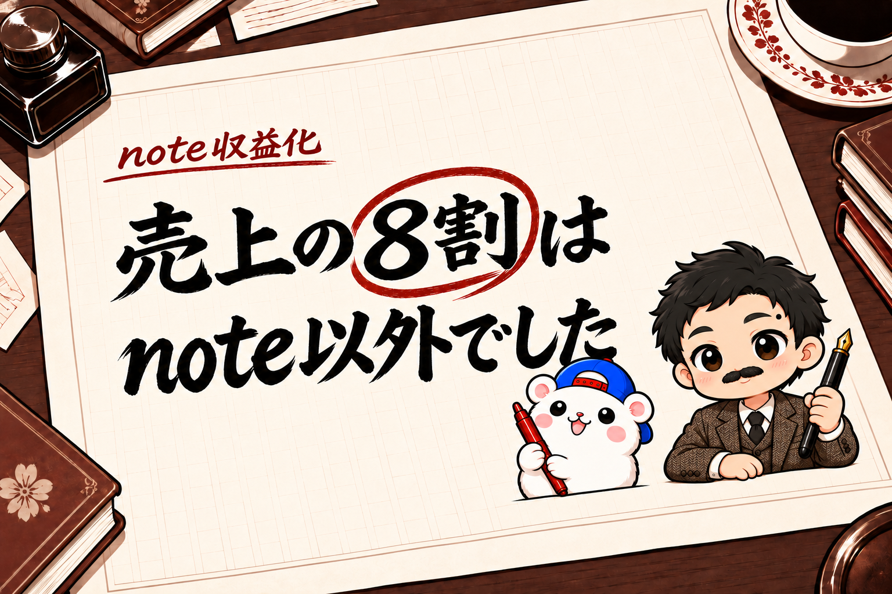

noteの収益化、noteだけで終わらせるのはもったいないです！
同じ有料記事を、ほかの販売サイトでも売れるからです。
ぼくはnoteのほかに、5つの販売サイトで売っています。
売上の約8割は、note以外でした。
ただ、どこに出してもいいわけではありません。
ぼくも20か所以上を調べて、新しく足したのは1つでした。
この記事では、次の3つを書きます。
- note以外に出したほうがいい理由
- ぼくが使っている5つの販売サイト
- 出す前に見る5つのポイント
この記事を書いた人

この記事は、フォロワーゼロから、教材を88部売ってきたきくりんが書いています。
いまは、noteのほかに5つの販売サイトで売っています。
1. 販売サイトは2つのタイプがある
| タイプ | 例 |
|---|---|
| ポータルサイト型 | Brain・Tips・Kindle・Udemy |
| 自店舗型 | 自分のサイト・MOSH |
販売サイトは、この2つに分かれます。
ポータルサイト型は、サイトが集客をしてくれます。
サイトの中に、買う人が集まっているからです。
あなたを知らない人にも、見つけてもらえます。
そのかわり、手数料は高めです。
自店舗型は、自分で集客をする必要があります。
SNSやブログで知ってもらい、自分のお店に来てもらう形です。
そのかわり、手数料はとても安いです。
例えば、MOSHは自店舗型です。
サイトの中に、講座を探す場所はありません。
noteは、そのまん中です。
noteの中で見つけてもらえることも、Xから連れてくることもできます。
noteの中での収益化は、こちらにまとめています。

2. note以外にも出したほうがいい理由
理由は2つです。
① 手取りが増える
noteの手数料は、合わせて約15%です。
自分のサイトなら、約4%ですみます。
② 見つけてもらえる入口が増える
noteを見ない人もいます。
BrainやKindle、Udemyにも出せば、その人たちの目にも入ります。
3. ぼくが使っている5つの販売サイト
| 販売サイト | 役割 |
|---|---|
| 自分のサイト | いちばん売れる。手数料が安い |
| Brain | 紹介してくれる人がいる |
| Tips | 11月に出したばかり |
| Kindle | 本の形で読まれる入口 |
| Udemy | 動画で見つけてもらう入口 |
いちばん売れているのは、自分のサイトです。
Xやブログで読んでくれる人が増えたら、まずはここを作ります。
ほかの4つはポータルサイト型で、ぼくを知らない人への入口です。
売れた数より、見つけてもらえたかで見ます。
例えば、Kindleの本は、1か月で売れたのは0冊でした。
でも、読み放題で何人かが読んでくれていました。
そこからXに来てくれれば、十分です。
4. ポイント① 買う人がいるか
いちばん先に見るのは、手数料ではありません。
買う人がいるかです。
人がいなければ、手数料が安くても売れません。
見るのは2つだけです。
- 会員の数を公表しているか
- 売れ筋のランキングがあるか
どちらもないなら、自店舗型と同じです。
自分で集客することになります。
もう1つ、買う人の好みも見ます。
例えば、競馬の予想がよく売れているサイトに、AIの教材を出しても目に入りません。
5. ポイント② 手数料は「広告費」と考える
| 販売サイト | 手数料のめやす |
|---|---|
| 自分のサイト | 約4% |
| Brain・Tips | 12〜14% |
| Udemy | 自分で連れてくると約3%/Udemyが見つけると約60% |
手数料は、安さだけで決めません。
Udemyがわかりやすい例です。
自分で連れてきた人なら、ほぼ全部があなたに入ります。
Udemyが見つけてきた人なら、あなたに入るのは4割ほどです。
それでも、Udemyで買うのは、あなたを知らない人です。
手数料は、新しい人に見つけてもらう広告費。
そう考えると、決めやすくなります。
6. ポイント③ 規約に当たらないか
ココナラのヘルプ「出品禁止コンテンツ(コンテンツマーケット)」
ここで出せなくなる販売サイトが、いちばん多いです。
AIで教材を作っている人は、とくに見てください。
例えば、ココナラにはこんな決まりがあります。
- AIで作ったイラストは控える
- 画像は50枚まで
- ZIPのファイルは付けられない
ぼくの教材は、図をほとんどAIで作っています。
なので、出すのをやめました。
Udemyでは、AIの声で作った講座に、確認の書類を求められました。
「自分の声をもとにした声です」と説明して、書類を送りました。
規約は、AIに読ませると早いです。
「この教材で、当たる所はある？」と聞くだけです。
(最後は、規約をご自身で確かめてから決めてください)
7. ポイント④ ほかと同時に売っていいか
同じ教材を、いろいろなサイトで売りたい。
ここで気をつけるのが「独占」です。
例えば、Kindleには独占のしくみがあります。
入ると、読み放題でお金がもらえます。
そのかわり、ほかの電子書籍のお店には出せません。
どちらにするかは、出す前に決めます。
あとから変えると、出しなおしが大変です。
8. ポイント⑤ タイトルの書き方
Tipsの「記事公開におけるガイドライン」
販売サイトによって、使えない言葉があります。
例えば、Tipsではこんな言葉がNGです。
- 「◯万円稼げる」
- 「誰でも」
- 「本来の価格」で安く見せる
noteのタイトルを、そのまま使えるとは限りません。
「ぼくは◯万円でした」と、自分の体験として書くと通りやすいです。
9. 20か所以上から、ぼくが足したのはTipsだけ
5つのポイントで、こうしぼりました。
- 20か所以上を調べた
- 買う人がいる所は、4つ残った
- 規約などが合わない3つは、やめた
残ったTipsは、AIの教材がよく売れていました。
手数料も14%で、ほかのサイトと同時に売れます。
やめた所も、むだではありません。
理由がはっきりしたので、もう迷いません。
まとめ: noteの収益化は、note以外で広げる
出す前に見る5つのポイントです。
- 買う人がいるか
- 手数料は広告費と考える
- 規約に当たらないか
- ほかと同時に売っていいか
- タイトルの書き方
noteで売れた有料記事は、ほかでも売れます。
まずは1本選んで、出したい販売サイトに5つのポイントを当ててみてください。
▼ネタの作り方から、AIで教材にまとめて売るまで、やったことを1冊にまとめてあります
フォロワーゼロから利益95.8万円まで、54日間の数字と失敗と手順を、全部書いた教科書です。
録音から記事、教材、販売ページ、売れたあとの台帳まで。うちで毎日使っているツールも付録に入れました。
『noteから始める「AI×◯◯」コンテンツ販売の教科書｜フォロワーゼロから利益95.8万円』


販売価格は3部売れるごとに2,000円ずつ値上がりします（上限あり）。内容・最新価格は販売ページをご確認ください。